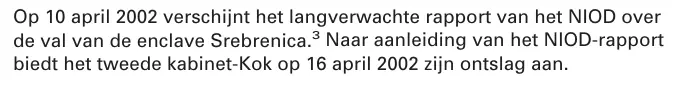

Dokaz · Izvještaj
Izvještaj Parlamentarne istražne komisije za Srebrenicu, 27. januara 2003.
Odlomak
„Dana 10. aprila 2002. izlazi dugo očekivani izvještaj NIOD-a o padu enklave Srebrenica. Povodom izvještaja NIOD-a druga vlada Koka 16. aprila 2002. podnosi ostavku.“ Stranica 7, uvodni pasus odjeljka 1.1.2, o povodu za istragu. Prijevod s nizozemskog; izvorni tekst naveden je ispod.
Izvorni tekst
“Op 10 april 2002 verschijnt het langverwachte rapport van het NIOD over de val van de enclave Srebrenica. Naar aanleiding van het NIOD-rapport biedt het tweede kabinet-Kok op 16 april 2002 zijn ontslag aan.” Pasus je odštampan u tri reda; redovi su ovdje spojeni. Neposredno iza prve rečenice stoji broj fusnote koji upućuje na izvještaj NIOD-a; izostavljen je iz citata.

Zašto je ovaj dokument važan
Ovdje sama parlamentarna istražna komisija opisuje koliku je političku težinu imala Srebrenica. Šest dana nakon objavljivanja dugo očekivanog izvještaja NIOD-a cijela druga vlada Koka podnijela je ostavku. Predstavnički dom nizozemskog parlamenta potom je pokrenuo ovu istragu kako bi došao do konačne političke ocjene postupanja vlade, samog Predstavničkog doma i odgovornih u državnoj upravi i oružanim snagama. Filmske rolne pripadaju istom dosjeu.
Porijeklo
- Dokument
- Završni izvještaj parlamentarne istrage, zvanični naslov Enquête Srebrenica; Rapport, 463 stranice
- Pošiljalac
- Parlamentarna istražna komisija za Srebrenicu, osnovana 5. juna 2002.; predsjednik A.D. Bakker (D66), potpredsjednica B.M. de Vries (VVD), članovi A.G. Koenders (PvdA), J.C. Huizinga-Heringa (ChristenUnie), A. Mosterd (CDA), F. Vergeer-Mudde (SP) i H.R.R. Wijnschenk (LPF), kojeg je 10. septembra 2002. zamijenio E.J. Groenink (LPF), koji je na vlastiti zahtjev napustio komisiju 17. oktobra 2002.
- Primalac
- Predstavnički dom nizozemskog parlamenta (Tweede Kamer der Staten-Generaal), Hag
- Izdavač
- Tweede Kamer der Staten-Generaal, Hag, 2003.; pristupljeno putem zoek.officielebekendmakingen.nl
- Datum
- Objavljen 27. januara 2003.; komisija je istragu provodila od juna 2002. do januara 2003.
- Predmet
- Postupanje Predstavničkog doma, vlade i odgovornih u državnoj upravi i oružanim snagama prije, tokom i nakon događaja u Srebrenici; ovdje citirani odlomak je odjeljak 1.1.2, o povodu za istragu
- Upućivanja
- Parlamentarni dokument 28 506, br. 3, parlamentarna godina 2002–2003, odjeljak 1.1.2, str. 7 (stranica 3 PDF-a); zaglavlje štampanog sveska glasi 28 506, br. 2 i 3
- Jezik
- Nizozemski
- Arhivska kopija
- Wayback Machine, 20. septembra 2025.
Citirano u: eseju „Zabrana pala, knjiga opstala“ u poglavlju (4) „Zataškavanje s međunarodnom dimenzijom“.
Stranica dokaza: https://
Dokument: https://
Arhivska kopija: https://
Pristupljeno 3. oktobra 2026.

Ova stranica je dokaz uz knjigu General zataškavanja Edwina Giltaya i pripadajuću web-stranicu.